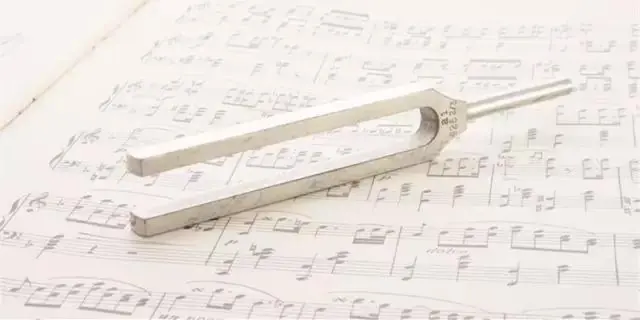
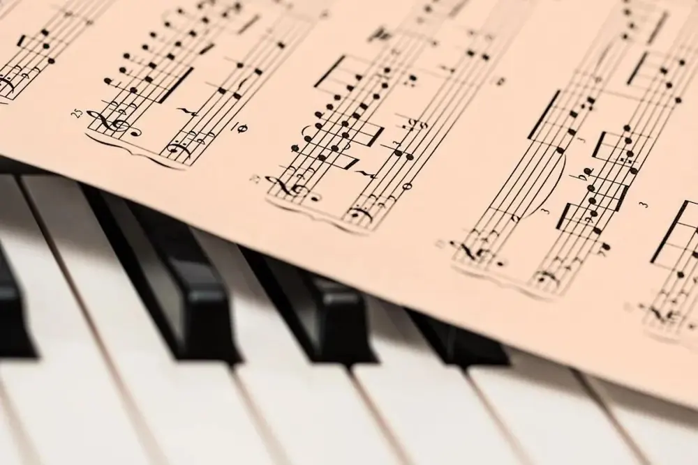
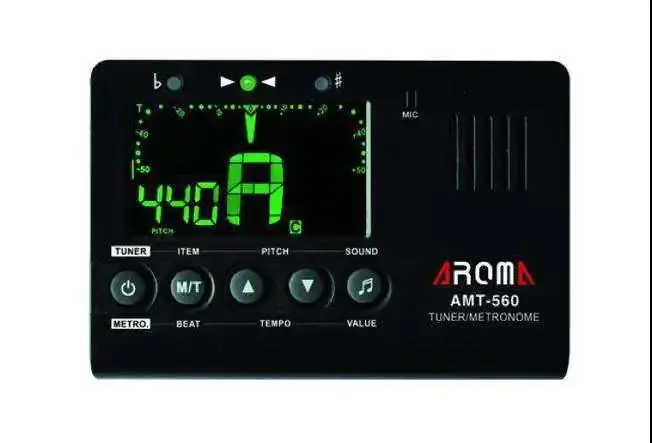
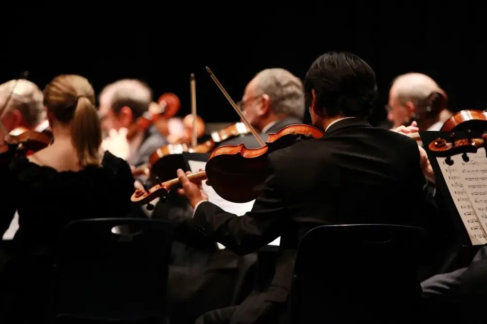
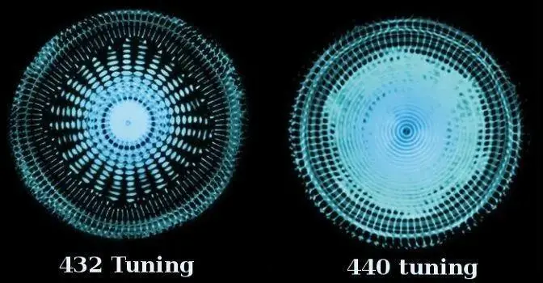

這是舊站 oliverflute.com 的文章，內容保留原貌，只修正排版。其中的考試日期、價錢和課程安排屬寫作當時的資料，請以現行公布為準。
今天給大家講講關於標準音的傳說。稍微瞭解音樂的朋友都知道，我們現在使用的第一標準音是440Hz的a音。

C do 261.6HZ
D re 293.6HZ
E mi 329.6HZ
F fa 349.2HZ
G sol 392HZ
A la 440HZ
B si 493.8HZ
我們現在習以為常的標準音，是經過了一系列的演變，最終統一成現在的音高。在沒有統一之前，世界各地的音高標準其實都是不一樣的。

為什麼440Hz是標準音？
440Hz是指聲波每秒震動440次時產生的音高。在還未出現國際統一的音高標準的時候，樂音體系中的音高按照人工規定，但標準不一。每個國家都有自己的音高標準，從而使得各國的音樂交流產生了隔閡。

除了440Hz的統一規定標準音，實際上我們在應用中是有很多變化的。
在交響樂團中，常常會使用442Hz的頻率來定音。音樂家們認為在音準基本不變的前提下，這樣能使音樂整體偏向明亮。

除了442Hz以外，還有樂團把音定的更高一些，有些高會到448Hz，這樣整個音樂在聽覺上會有很明顯的區別。
但是也有一部分的人堅持認為更低的頻率是更好的。有一個關於432Hz的傳說，非常玄學。
比起音樂家所說的音色更亮，一些民間科學家把432Hz稱為宇宙的頻率。是不是整個事情一下就被拔高了？

“432赫茲在數學上與宇宙的模式最吻合。研究顯示把音樂調為432赫茲能跟宇宙的黃金比例PHI一樣，而且還統一了光、時間、空間、物質、地心引力和磁力與生物的DNA編碼與意識。當我們DNA裡的原子跟自然的頻率一樣共鳴，我們對於自然的感官大幅提升。”
因為涉及到頻率，宇宙簡直太有發言權了。宇宙裡充斥著各種各樣的頻率。所以就有人搬出了尼古拉·特斯拉這位大神。
特斯拉很懂頻率，比咱們都懂。而且據傳說他對3、6、9這三個數字很癡迷。而432恰好能被這三個數字整除，440就不能了，於是這也變成了一個選擇432的理由。
更誇張的是，還有人說440Hz的音樂會因為音調高了，會使人煩躁不安，激發人類的暴力傾向。這種振頻會使人們的情感和思想變得單一、狹隘，成為某種特定意識的奴隸，意識變得狹隘、僵化、匱乏，並促使恐懼和暴力，容易被別人控制和操縱，更容易服從鬥爭性指令。
且不說432Hz是不是這麼和諧，就說我們日常演出，也不完全是用440Hz呀！
但是既然搬出了這麼多玄學，我也沒有那麼多知識可以用，反駁不出來。不如直接聽一聽，這兩種定音的頻率演奏出的音樂到底有什麼神奇功效。
我們確實能夠聽出來兩種音高的區別，但是我個人啊，並沒聽出宇宙的奧秘，也沒有被共振到……
我們縱觀音樂的歷史，卻能發現另一個規律，就是人們喜歡的音樂頻率確實是越來越高了。
早期音樂的音高比現在低很多，比如現在演奏巴羅克時期的音樂，會採用415Hz的定音。而且即使我們今天已經把標準音定在了440Hz，還是越來越多的樂團會採用更高的頻率來演奏。